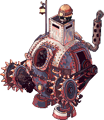
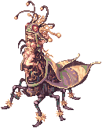

Mineração¶
Situação: em preparação.
Nas minas de Mjolnir, de Einbroch e no Formigueiro aparecem jazidas (pedras que dá para quebrar). Qualquer um pode minerar, mas é trabalho de Ferreiro: ele minera mais rápido e é o único que acha os minérios bons.
Como minerar¶
- Tenha uma picareta na mochila.
- Clique na jazida. Aparece uma barra: fique parado até ela encher. Se andar, usar item ou levar dano, perde a tentativa.
- Cada jazida aguenta 5 golpes e some; outra aparece em outro canto da mina em 2 minutos.
Os monstros da mina continuam atacando: vá preparado. Com mais de 90% de peso, não dá para minerar.
Picaretas¶
| Picareta | Onde | O que faz |
|---|---|---|
| de Ferro | loja da sala do Ferreiro, no Distrito dos Mercadores (5.000 z) | jazidas comuns |
| de Aço | forjada por um Ferreiro (Forjar Maça) | também as jazidas fundas; mais rápida (2 s para o Ferreiro) |
| de Oridecon | forjada por um Ferreiro (Forjar Maça nv 3) | todas, inclusive a Jazida Ancestral; a mais rápida |
O que sai¶
- Jazida comum: Minério de Ferro, Carvão, pedras de elemento brutas e, às vezes, Poeira Estelar.
- Jazida funda: Oridecon e Elunium brutos, Poeira Estelar e gemas (Topázio, Granada, Ametista, Esmeralda).
Para o Ferreiro, Encontrar Minério dá chance de tirar dois itens de uma vez, e a Ganância ajuda a achar os raros.
Jazida Ancestral¶
Quando morre o

RSX-0806 (Mina de Einbroch), a
Maya (Formigueiro) ou a Moonlight Flower (Caverna de Payon), nasce uma Jazida Ancestral ao lado de onde ele caiu, por 10 minutos. Só a picareta de Oridecon a quebra, e cada personagem tira até 3 vezes. Dela sai o Minério Ancestral, usado nas armas mais fortes, e o Ferreiro que a termina ganha fama.